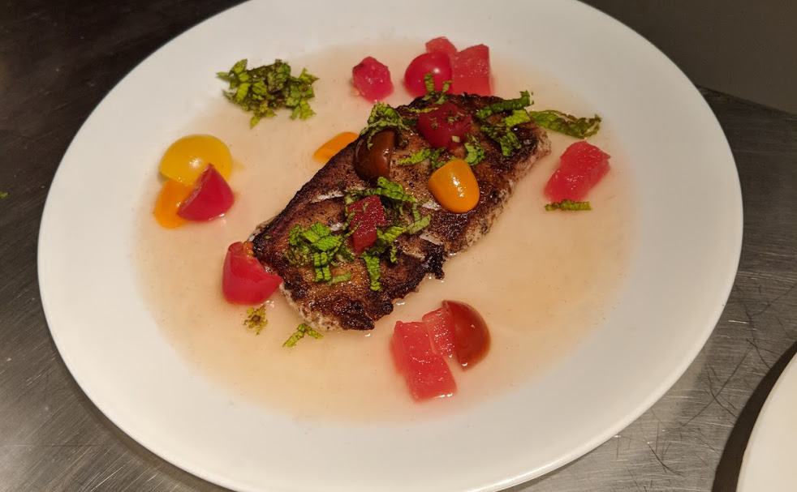

Sea Bass
Tomato | Watermelon | Mint

Ingredients
- Sea Bass Fillets (1 fillet per serving, this recipe makes enough tomato water and watermellon for 4-6 servings)
- 1lb Fresh Heirloom Tomatoes
- Clarifying Agents (Chitosan, Kieselsol and Pectinex)
- Watermelon
- Mint
- Simple Syrup
- Watercress Puree
- Salt
- Pepper
- Balsamic Vinegar
Tools
- Centrifuge (Optional)
- Vacuum Chamber (Optional)
- Sous Vide Setup (Optional)
Notes:
This recipe uses a number of tools that may not be available in the average home kitchen. These tools allow us to complete this recipe faster and with more precision, however you can a delicious version of this dish without these tools.
Tomato Water
Ingredients
- 1# Fresh Heirloom Tomatoes (Or whatever the most flavorful tomatoes you can find are)
- Tarragon
- Basil
- PectinX
- Kieselsol
- Chitosan
Tools
- Centrifuge
Blend tomatoes, tarragon, basil and pepper.
Add PectinX (3ml per 1000ml of liquid) and blend until liquid is warm. Once liquid is warm, mix in Kieselsol (2ml per 1000ml of liquid) and set a 15 minute timer.
After 15 minutes mix in Chitosan (2ml per 1000ml of liquid) and set another 15 minute timer.
After 15 minutes mix in Kieselsol (2ml per 1000ml of liquid) and dispense into your centrifuge.
Spin in your centrifuge NOTE: We use a Spinzall by Booker and Dax and spin for 30 minutes, if you are using a different centrifuge refer to your models guidelines.
NOTE: If you do not have access to a centrifuge you could also use any of the numerous other clarification techniques. In this case we would reccomend the agar quick clarification approach as outlined by Dave Arnold
Compressed Mint Watermelon
Ingredients
- 2-3 slices of Watermelon
- Mint
- Sugar
- Water
Tools
- Chamber Vacuum
Heat sugar and water until melted to make a 100% simple syrup. Add finely chopped mint (alternatively use LN2 to freeze the mint and then blend to a powder!) and stir, Remove syrup from heat, strain and reserve.
TIP Fill large boel with ice, place smaller metal bowl on ice and pour mint simple syrup into metal bowl to cool rapidly.
Place watermelon slices in a large vacuum bag. pour chilled mint simple syrup into bag. Vacuum compress in Chamber by pulling a full vacuum
Reserve compressed mint watermelon in bag for plating
NOTE: There are a few alternatives if you do not have a vacuum chamber. The first option would be to use an ISI to do the compression. Check out the Cooking Issues blog post to learn more about this technique
Alternatively You can simply let the watermelon marinate in the mint syrup for at least an hour. This approach will still give you the flavors, but wont give you the same texture as tne compresse watermelon.
Prepare Water bath
Ingredients
Tools
- Sous Vide Setup (we use Anova)
If you are cooking the seabass sous vide, prepare you water bath and set to 45°C.
Sea Bass
Ingredients
- Sea Bass Fillets
Tools
- Vacuum sealer
- Vacuum Bags
Vacuum pack the Seabass filet(s)
TIP If using chamber try and target a 90% Vacuum. Learn why here!
Place sealed Sea Bass in 45°C water bath and cook for 20 minutes
NOTE: If you do not want to sous vide the sea bass, you could alternatively cook it your preferred method, however it would be reccomended to prepare the plating steps first.
Finish
Ingredients
- Tomato Water
- Compressed Mint Watermelon
- Balsalmic Vinegar
- Seabass Fillets
- Cherry Tomatos (quartered)
- Mint (chiffonade)
- Gooking Oil
- Salt
- Pepper
Tools
- Pan for Searing
- Oven, or other means of warming plates
Warm plates in a 200°F (93°C) oven.
Warm tomato water to 120*F (48°C).
Remove watermelon from syrup and cut into 1/4" cubes.
Remove sea bass from waterbath, and dry fillets with paper towels. Season fillets lightly with salt and pepper.
Heat pan over high heat and add a healthy layer of oil (we reccomend grapeseed oil) and heat until nearly smoking
TIP You need this pan to be roaring hot to get a good sear on the fish without overcooking it. Remember the sea bass is already cooked from the sous vide, we just want to put a nice sear on it.
Once the pan is very hot, place fillets on pan, making sure not to crowd the pan (you can always do it in batches).
Sear seabass on one side, this should take about 60-90 seconds.
Remove sea bass from pan and dry on a paper towel lined plate.
Pour warmed tomato water onto each warmed serving plate to form a base for the dish.
Place seared piece of Sea Bass on the plate.
Arrange watermelon cubes into small piles or pyramides, assemble 3 groups per plate.
Garnish with a few pieces of quartered cherry tomato and the mint.